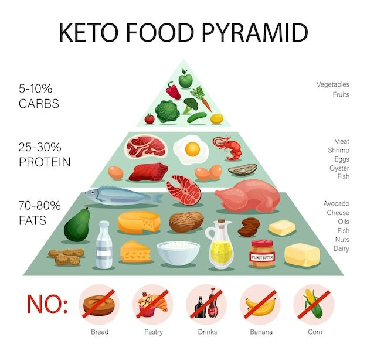
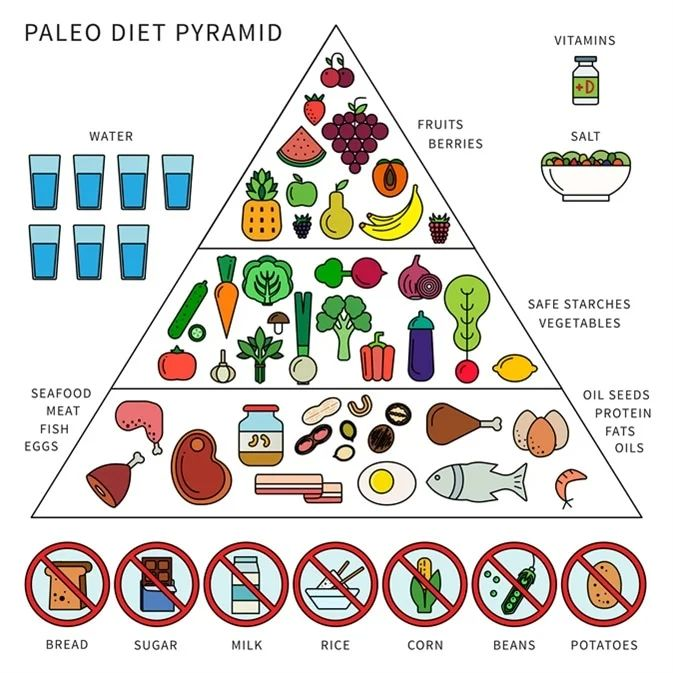
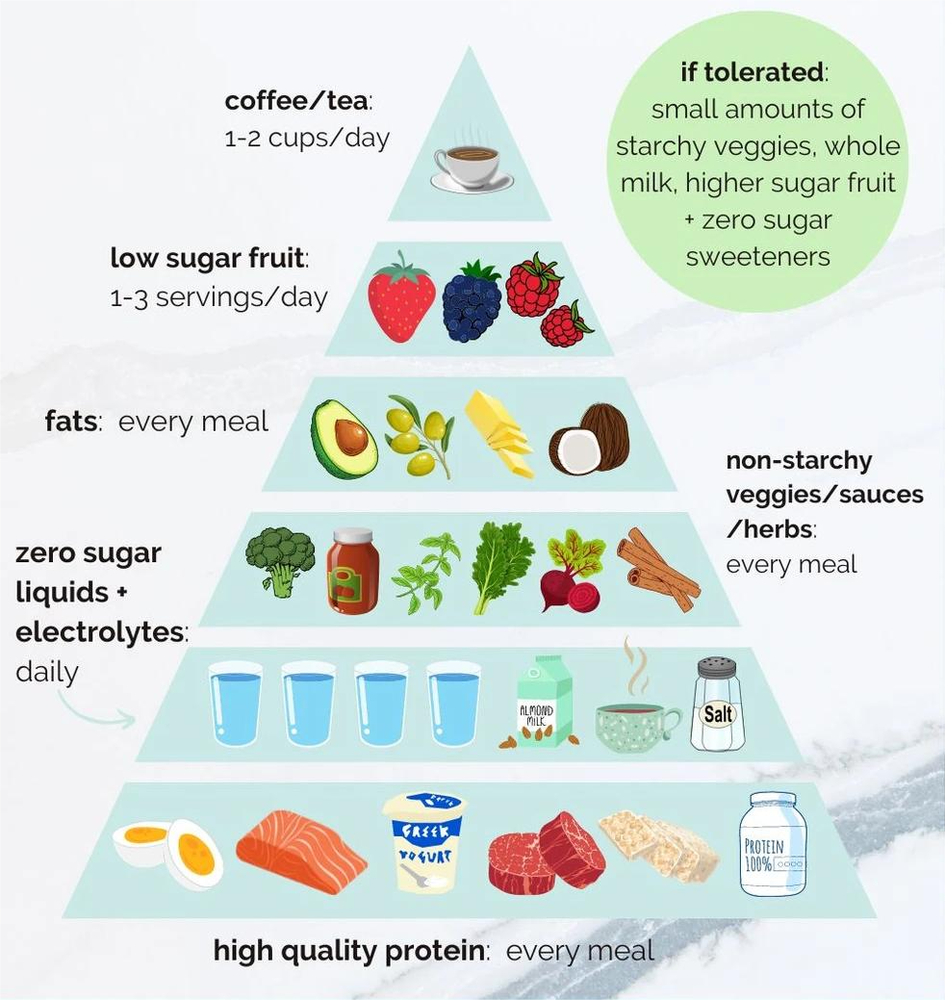
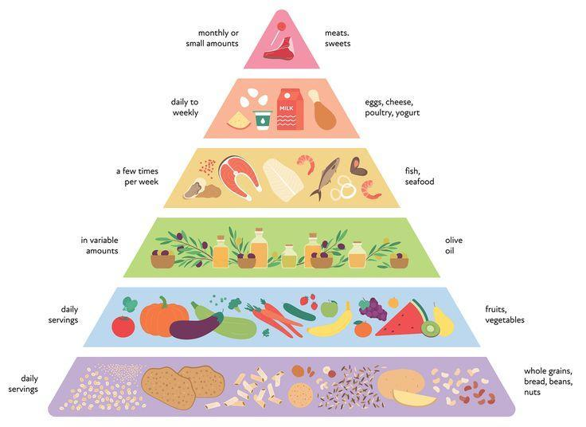
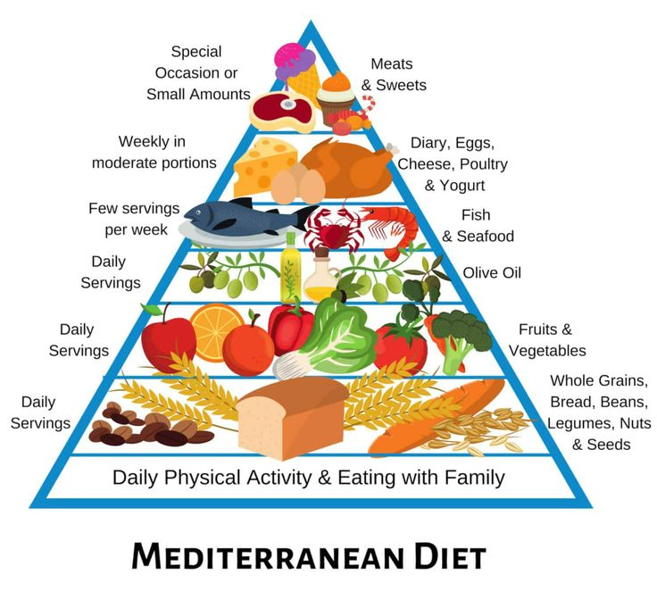
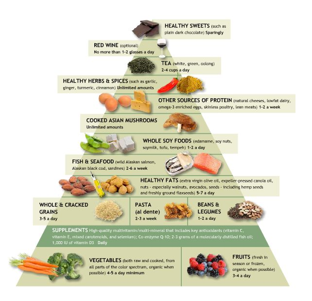

Keto Dieti
Keto pəhrizi, yüksək yağ, orta səviyyədə protein və aşağı karbonhidratlardan ibarət bir pəhriz planıdır. Bu pəhriz, bədənin əsas enerji mənbəyi olaraq yağları istifadə etməyə yönəldir və karbohidratları minimal səviyyəyə endirir. Bədənin bu şəkildə işləməsi "ketozis" adlanan bir vəziyyətə gətirib çıxarır. Ketozis, bədənin karbohidrat əvəzinə yağları enerji kimi istifadə etməyə başlaması ilə meydana gəlir.
Əsas Prinsiplər
- Yüksək Yağlar: Pəhrizin təxminən 70-75%-i yağlardan gəlir. Bunlar əsasən sağlam yağlardır (avokado, zeytun yağı, kokos yağı və s.).
- Orta Protein İstehlakı: Pəhrizdəki protein miqdarı orta səviyyədədir və təxminən 20-25% təşkil edir. Çox yüksək protein istehlakı, ketozisə girməyə mane ola bilər.
- Aşağı Karbohidratlar: Karbohidratlar gündəlik kalorinin 5-10%-ini təşkil edir və ümumiyyətlə 20-50 qram arasında olmalıdır. Əsasən şəkər, çörək, pasta, kartof və digər yüksək karbohidratlı qidalardan çəkinilir.
- Ketozis Vəziyyəti: Bədənin enerji üçün yağları istifadə etməsi və bu yağlardan keton cisimlərinin əmələ gəlməsi prosesi. Bu vəziyyətdə bədən, qaraciyərdən ketonları enerji üçün istifadə edir.
Üstünlüklər
- Çox sürətli çəki itirmə
- Yağ yandırma prosesini sürətləndirir
- Qan şəkərini stabil saxlayır
- Yüksək enerjili və fokuslanmış vəziyyət təmin edir
Çatışmazlıqlar
- Karbohidratların kəskin şəkildə azaldılması bəziləri üçün çətin ola bilər
- Keto qızartma, çoxlu yağlı qidalar istehlakı ilə əlaqəlidir
- Bəzi insanlar üçün uzun müddətli izlənməsi çətin ola bilər
Paleo Dieti
Paleo Dieti (Paleolitik Pəhriz), insanın ənənəvi, qədim dövrlərdəki yeyilən qidalara əsaslanaraq hazırlanmış bir pəhrizdir. Bu pəhriz, insanların tarixinə və genetikasına uyğun olaraq tərtib edilib. Paleo dieti, müasir sənaye məhsulları və hazır qidalardan uzaq durmağı təşviq edir və yalnız təbii, təzə və işlənməmiş qidaların istehlakını məsləhət görür.
Əsas Prinsiplər
- Təbii Qidalar: Pəhrizdə təbii və işlənməmiş qidalar, o cümlədən ət, balıq, tərəvəz, meyvə və qoz-fındıq kimi məhsullar yer alır.
- Qidaların Rəngarəngliyi: Müxtəlif tərəvəzlər və meyvələr pəhrizin əsas hissəsidir və təbii şəkərlərdən enerjini təmin edir.
- Ət və Balıq: Təzə və təbii olaraq böyüdülən ət və balıq məhsulları əsas qida qaynağıdır.
- Laktik Məhsulların İstifadəsi: Süd və süd məhsulları pəhrizdə yer almaz, lakin bəzi probiyotik fermentləşdirilmiş süd məhsullarına icazə verilir.
- Taxıllar və Legumlar: Taxıllar və legumlar bu pəhrizdə qadağandır.
- Şəkər və Süni Qida Əlavələri: Şəkər və süni qida əlavələri qadağandır, şirinlik yalnız təbii meyvə şəkərləri ilə təmin edilir.
Üstünlüklər
- Təbii və təzə qidalara əsaslanır, bu da bədənin ehtiyaclarına uyğun olur
- İmmunitet sistemini gücləndirir
- Şəkər və işlənmiş qidalardan uzaqdır
- Həmçinin qanın təzyiqini və xolesterini nizama salmağa kömək edir
Çatışmazlıqlar
- Taxıl, süt məhsulları və işlənmiş qidalar qəti şəkildə xaric edilir
- Yemək hazırlığı daha çox zaman alır
- Sosial vəziyyətlərdə çətinliklər yarada bilər
Intermittent Fasting
Intermittent Fasting (İntermitent oruç), yəni "vaxtlı oruç" pəhrizinin əsas prinsipi, yemək və oruç tutma dövrlərinin növbələşməsidir. Bu pəhriz, qidalanma dövrlərinin müəyyən saatlarla məhdudlaşdırılmasına və uzun müddət oruç tutmağa əsaslanır. İntermitent oruç, oruç tutma müddətində bədənin enerjisini daha çox yağlardan almasını təmin edərək, çəki itirilməsinə və digər sağlamlıq faydalarına gətirib çıxara bilər.
Əsas Prinsiplər
- Vaxt məhdudiyyəti ilə yemək: Yemək dövrü müəyyən saatlarla məhdudlaşdırılır (məsələn, 8 saat).
- Aclıq dövrü: Oruç tutulan vaxtlarda yalnız su, çay və ya qəhvə kimi kalorisi olmayan içkilər içilə bilər.
- Yağlardan enerji istifadəsi: Bədənin enerji mənbəyi olaraq yağlar istifadə edilir.
- Qidalanma dövrlərinin balansı: Sağlam və balanslı qidalar qəbul edilir, kalori alınması kontrol edilir.
- Həftəlik və gündəlik qrafiklər: 16/8, 5/2 metodları kimi müxtəlif tətbiq növləri vardır.
Üstünlüklər
- Çəki itkisini təşviq edir
- Hormon səviyyələrini tənzimləyir
- Fiziki və zehni enerjini artırır
Çatışmazlıqlar
- Başlanğıcda aclıq hissi və yorğunluq meydana gələ bilər
- Çoxlu su içmək və düzgün bədənin ehtiyaclarını ödəmək vacibdir
DASH Dieti
DASH dieti(Dietary Approaches to Stop Hypertension), hipertoniya (yüksək qan təzyiqi) ilə mübarizə aparmaq və ümumi sağlamlığı yaxşılaşdırmaq məqsədi ilə hazırlanmış bir pəhriz planıdır. Bu pəhriz, aşağı duz, yüksək lifli və qidalanma baxımından zəngin bir diyet təklif edir. DASH dieti, qan təzyiqini azaltmaq və ürək xəstəlikləri riskini azaltmaq üçün nəzərdə tutulub, lakin o, ümumiyyətlə sağlam qidalanmaya yönəlmiş bir plan olaraq tətbiq edilə bilər.
Əsas Prinsiplər
- Aşağı Duz İstehlakı: Gündəlik duz istehlakını 1500-2300 mq ilə məhdudlaşdırmaq, qan təzyiqini azaltmağa kömək edir.
- Yüksək Lif Tərkibi: Meyvələr, tərəvəzlər, tam taxıllar və paxlalılar kimi lifli qidaların istehlakını artırın.
- Yaxşı Yağlar və Zülallar: Zeytun yağı, avokado, az yağlı ət və balıq kimi sağlam yağlar və proteinlər.
- Meyvələr və Tərəvəzlər: Gündəlik 4-5 porsiya meyvə və tərəvəz istehlakı tövsiyə olunur.
- Süd Məhsulları: Az yağlı süd məhsulları (pendir, süd, yogurt) istehlak edin.
- Şəkər və Şirniyyatların Azaldılması: Şəkər və şirniyyatların istehlakını məhdudlaşdırın.
Üstünlüklər
- Yüksək qan təzyiqini tənzimləyərək ürək xəstəlikləri və insult riskini azaldır.
- Yüksək təzyiqi olan insanlarda qan təzyiqini aşağı salmağa kömək edir.
- Vitamin, minerallar və liflə zəngin olan bu pəhriz qida çatışmazlıqlarının qarşısını alır və bədənin ümumi vəziyyətini yaxşılaşdırır.
Çatışmazlıqlar
- Hər gün çoxlu tərəvəz və meyvə istehlakını tələb edir. Bəzi insanlar üçün bu, çətin ola bilər, xüsusilə həmin qidaları sevməyənlər üçün.
- Duz və şəkərdən çəkinmək pəhrizdə təbii qida dadlarının dəyişməsinə və bəzən daha az cəlbedici olmasına səbəb ola bilər.
Mediterranean Dieti
Aralıq Dənizi Pəhrizi (Mediterranean Diet), Aralıq Dənizi bölgəsindən ilham alınaraq hazırlanmış, sağlam və balanslı bir qidalanma tərzidir. Bu pəhriz, xüsusən ürək sağlamlığını dəstəkləyən və uzun ömürlü olmağa kömək edən faydalı qidalarla zəngindir. Aralıq Dənizi pəhrizində əsasən təzə tərəvəzlər, meyvələr, tam taxıllar, zeytun yağı, balıq və dəniz məhsulları yer alır. Qırmızı ət və şəkərli qidalar isə məhdudlaşdırılır.
Əsas Prinsiplər
- Yağlar: Zeytun yağı və qoz-fındıq kimi sağlam yağlar əsas enerji mənbəyidir.
- Balıq və Dəniz Məhsulları: Həftədə ən azı 2-3 dəfə balıq və dəniz məhsulları yeyilir.
- Tərəvəz və Meyvələr: Hər gün çoxlu tərəvəz və meyvə qəbul edilir.
- Tam Taxıllar: Yulaf, buğda, quinoa kimi tam taxıllar əsas qida qruplarındandır.
- Qırmızı Ət: Qırmızı ət nadir hallarda və az miqdarda yeyilir.
- Süd Məhsulları: Yalnız az yağlı süd məhsulları istehlak edilir.
- Şəkər və Emal Edilmiş Qidalar: Şəkər və emal edilmiş qidalar minimuma endirilir.
- Fiziki Aktivlik: Müntəzəm fiziki fəaliyyət təşviq edilir.
Çatışmazlıqlar
- Ürək sağlamlığını gücləndirir
- Xroniki xəstəliklərin qarşısını alır
- Yüksək xolesterol səviyyələrini azaldır
- Fərqli və zövqlü qidaları ehtiva edir
Çətinliklər
- Yağlı qidaların istifadəsi ilə bəzi insanlar narahatlıq hiss edə bilər
- Pəhriz çox geniş olduğu üçün izlənilməsi çətin ola bilər
Atkins Dieti
Atkins Pəhrizi, 1972-ci ildə doktor Robert Atkins tərəfindən yaradılmış və yüksək yağ, orta protein və aşağı karbohidratlardan ibarət olan bir pəhriz planıdır. Bu pəhriz, bədənin karbohidrat əvəzinə yağları enerji mənbəyi kimi istifadə etməyə yönəldir. Atkins Pəhrizi, xüsusən sürətli çəki itirmək istəyənlər üçün məşhur bir seçimdir. Pəhrizin əsas məqsədi bədəni ketozis vəziyyətinə salmaqdır ki, bu da bədənin enerji mənbəyi olaraq karbohidratlar əvəzinə yağlardan istifadə etməsinə səbəb olur.
Əsas Prinsiplər
- Yüksək Yağlar: Pəhrizin təxminən 60-70%-i yağlardan gəlir.
- Orta Protein İstehlakı: Proteinlər orta səviyyədədir.
- Aşağı Karbohidratlar: Karbohidratlar ciddi şəkildə azaldılır.
- Ketozis: Bədənin enerji mənbəyi olaraq yağları istifadə etməsi təmin edilir.
Üstünlüklər
- Çəki itirməni sürətləndirir
- İnsulin səviyyələrini tənzimləyir
- Səhər yeməyində yüksək protein tərkibli qidalar ilə uzun müddət toxluq hissi təmin edir
Çatışmazlıqlar
- Karbohidratların ciddi şəkildə azaldılması bəziləri üçün çətin ola bilər
- Pəhriz dəyişikliyi bəzi insanlar üçün narahatlıq yarada bilər